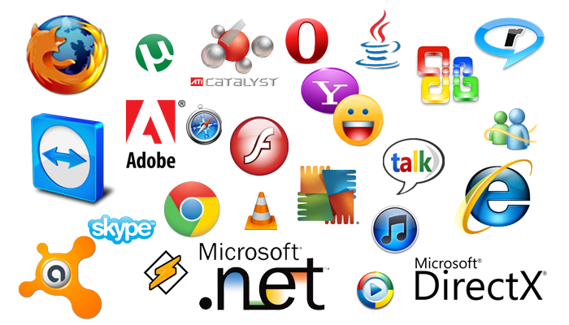

Utilize os botões
para voltar/avançar os slides
Ou aguarde o slide passar automaticamente.
Boa leitura
O Computador Moderno
Hardware é toda a parte física do Computador, ou seja, tudo que podemos tocar.
Tem como função movimentar o cursor, e acionar comandos na tela do computador.
O teclado de computador é um dispositivo que possui uma série de botões ou teclas, e utilizado para inserir dados no computador. É um tipo de periférico de entrada utilizado pelo usuário para a entrada manual no sistema de dados e comandos. Possui teclas representando letras, números, símbolos e outras funções, baseado no modelo de teclado das antigas máquinas de escrever.
É uma sequência de instruções a serem seguidas e/ou executadas, na manipulação, redirecionamento ou modificação de um dado/informação ou acontecimento.
Existem vários tipos de softwares. Alguns deles são:
É constituído por uma variedade de programas que nos permitem realizar variadíssimas tarefas relacionadas com os nossos trabalhos e lazer. Exemplos:
São utilizados para acessar a Internet
Exemplos:
É o programa mais importante de um computador indispensável para o funcionamento e organização da máquina. Serve também para executar aplicações.
O sistema operacional controla a atividade do CPU, gere as memórias e assegura a interação com o usuário.
Atraves do Menu Iniciar, teremos acesso a praticamente tudo no computador.
Estes são os botões de dimensionamento.
Eles sempre se localizam na barra de título, que é a primeira barrinha na parte de cima dos programas.
Esta tabela é muito importante, pois muitos arquivos em nosso computador, pendrive ou outros meios de armazenamento estão simbolizados, principalmente pelo KB. Assim para saber quantos Kilobytes eu preciso para formar Megabytes é só usar a tabela a seu favor.
Por Exemplo:
Em meu micro tem um arquivo de 108.300 KB, e quero saber quantos Megabytes ele equivale?
A resposta é fácil, através de um simples cálculo de conversão:
108.300 KB / 1024 = 105,7 MB
Onde o resultado dá aproximadamente 105,7 Megabytes. A conversão é simples, quando quero saber o resultado do Menor para o Maior é só dividir, caso contrário, é só usar a operação de Multiplicação.
Convertendo de 102 MB para KB seria:
102 MB x 1024 = 104.448 KB
Simples, não?
Estamos em volta de várias mídias que se encontram em vários tamanhos.
Cada tipo de mídia, possue um limite máximo de armazenamento. Sao elas:
É muito comum encontrar em fóruns e sites usuários com a mesma dúvida: “Por que só aparecem 74,6 GB disponíveis no meu HD se eu comprei um disco de 80 GB?”. Quem nunca teve essa dúvida?
Bom, a resposta é bem simples. No mundo da informática 1 KB = 1024 bytes. Mas, os fabricantes de HDs adotam 1 KB = 1000 bytes.
Bom, agora que tal começar a fazer umas contas? Para saber qual a real capacidade do seu disco rígido, basta pegar a calculadora e fazer umas continhas. Vamos lá?!
80.000.000.000 bytes / 1000³ = 80 GB, segundo os fabricantes de HD. No entanto, como falamos anteriormente, os sistemas operacionais utilizam 1 KB como 1024 bytes, então:
80.000.000.000 bytes / 1024³ = 74,50580596923828125 bytes, ou seja, aproximadamente 74,6 GB. Essas contas são um pouco complicadas.